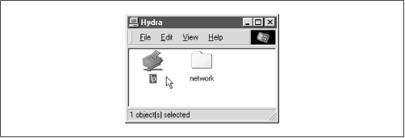
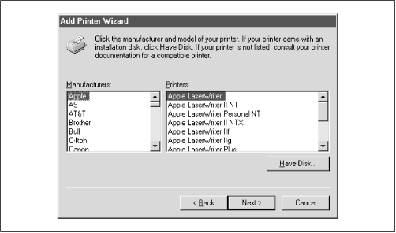
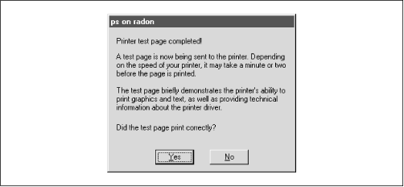
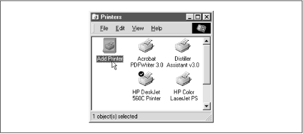
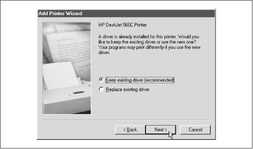

Using Samba
Robert Eckstein, David Collier-Brown, Peter Kelly1st Edition November 1999
1-56592-449-5, Order Number: 4495
416 pages, $34.95
|
|
Using SambaRobert Eckstein, David Collier-Brown, Peter Kelly1st Edition November 1999 1-56592-449-5, Order Number: 4495 416 pages, $34.95 |
 | Chapter 7 |
 |
7. Printing and Name Resolution
Contents:
Sending Print Jobs to Samba
Printing to Windows Client Printers
Name Resolution with Samba
This chapter tackles two Samba topics: setting up printers for use with a Samba server and configuring Samba to use or become a Windows Internet Name Service (WINS) server. Samba allows client machines to send documents to printers connected to the Samba server. In addition, Samba can also assist you with printing Unix documents to a printer on a Windows machine. In the first part of this chapter, we will discuss how to get printers configured to work on either side.
In the second half of the chapter, we will introduce the Windows Internet Name Service, Microsoft's implementation of a NetBIOS Name Server (NBNS). As mentioned in Chapter 1, Learning the Samba, an NBNS allows machines to perform name resolution on a NetBIOS network without having to rely on broadcasts. Instead, each machine knows exactly where the WINS server is and can query it for the IP addresses of other machines on the network.
7.1 Sending Print Jobs to Samba
A printer attached to the Samba server shows up in the list of shares offered in the Network Neighborhood. If the printer is registered on the client machine and the client has the correct printer driver installed, the client can effortlessly send print jobs to a printer attached to a Samba server. Figure 7.1 shows a Samba printer as it appears in the Network Neighborhood of a Windows client.
To administer printers with Samba, you should understand the basic process by which printing takes place on a network. Sending a print job to a printer on a Samba server involves four steps:
Opening and authenticating a connection to the printer share
Printing and deleting the copy of the file
Figure 7.1: A Samba printer in the Network Neighborhood
When a print job arrives at a Samba server, the print data is temporarily written to disk in the directory specified by the
pathoption of the printer share. Samba then executes a Unix print command to send that data file to the printer. The job is printed as the authenticated user of the share. Note that this may be the guest user, depending on how the share is configured.7.1.1 Print Commands
In order to print the document, you'll need to tell Samba what the command is to print and delete a file. On Linux, such a command is:
lpr -r -PprinterfileThis tells
lprto copy the document to a spool area, usually /var/spool, retrieve the name of the printer in the system configuration file (/etc/printcap), and interpret the rules it finds there to decide how to process the data and which physical device to send it to. Note that because the-roption has been listed, the file specified on the command line will be deleted after it has been printed. Of course, the file removed is just a copy stored on the Samba server; the original file on the client is unaffected.Linux uses a Berkeley (BSD) style of printing. However, the process is similar on System V Unix. Here, printing and deleting becomes a compound command:
lp -dprinter-sfile; rmfileWith System V, the /etc/printcap file is replaced with different set of configuration files hiding in /usr/spool/lp, and there is no option to delete the file. You have to do it yourself, which is why we have added the
rmcommand afterward.7.1.2 Printing Variables
Samba provides four variables specifically for use with printing configuration options. They are shown in Table 7.1.
Table 7.1: Printing Variables Variable
Definition
%sThe full pathname of the file on the Samba server to be printed
%fThe name of the file itself (without the preceding path) on the Samba server to be printed
%pThe name of the Unix printer to use
%jThe number of the print job (for use with
lprm,lppause, andlpresume)7.1.3 A Minimal Printing Setup
Let's start with a simple but illustrative printing share. Assuming that you're on a Linux system and you have a printer called
lplisted in the printer capabilities file, the following addition to your smb.conf file will make the printer accessible through the network:[printer1] printable = yes print command = /usr/bin/lpr -r %s printer = lp printing = BSD read only = yes guest ok = yesThis configuration allows anyone to send data to the printer, something we may want to change later. For the moment, what's important to understand is that the variable
%sin thecommandoption will be replaced with the name of the file to be printed when Samba executes the command. Changing theprint commandto reflect a different style of Unix machine typically involves only replacing the right side of thecommandoption with whatever command you need for your system and changing the target of theprintingoption.Let's look at the commands for a System V Unix. With variable substitution, the System V Unix command becomes:
print command = lp -d%p -s %s; rm %sAs mentioned earlier, the
%pvariable resolves to the name of the printer, while the%svariable resolves to the name of the file. After that, you can change theprintingoption to reflect that you're using a System V architecture:printing = SYSVIf you are using share-level security, pay special attention to the guest account used by Samba. The typical setting,
nobody, may not be allowed to print by the operating system. If that's true for your operating system, you should place aguestaccountoption under the printing share (or even perhaps the global share) specifying an account that can. A popular candidate with the Samba authors is theftpaccount, which is often preconfigured to be safe for untrusted guest users. You can set it with the following command:guest account = ftpAnother common printing issue is that clients may need to request the status of a print job sent to the Samba server. Samba will not reject a document from being sent to an already busy printer share. Consequently, Samba needs the ability to communicate not only the status of the current printing job to the client, but also which documents are currently waiting to be printed on that printer. Samba also has to provide the client the ability to pause print jobs, resume print jobs, and remove print jobs from the printing queue. Samba provides options for each of these tasks. As you might expect, they borrow functionality from existing Unix commands. The options are:
We will cover these options in more detail below. For the most part, however, the value of the
printingconfiguration option will determine their values, and you should not need to alter the default values of these options.Here are a few important items to remember about printing shares:
You must put
printable=yesin all printer shares (even[printers]), so that Samba will know that they are printer shares. If you forget, the shares will not be usable for printing and will instead be treated as disk shares.If you set the
pathconfiguration option in the printer section, any files sent to the printer(s) will be copied to the directory you specify instead of to the default location of /tmp. As the amount of disk space allocated to /tmp can be relatively small in some Unix operating systems, many administrators opt to use /var/spool or some other directory instead.If you set
guestok=yesin a printer share and Samba is configured for share-level security, it will allow anyone to send data to the printer as theguestaccountuser.Using one or more Samba machines as a print server gives you a great deal of flexibility on your LAN. You can easily partition your available printers, restricting some to members of one department, or you can maintain a bank of printers available to all. In addition, you can restrict a printer to a selected few by adding the trusty
validusersoption to its share definition:[deskjet] printable = yes path = /var/spool/samba/print valid users = gail samAll of the other share accessibility options defined in the previous chapter should work for printing shares as well. Since the printers themselves are accessed through Samba by name, it's also simple to delegate print services among several servers using familiar Unix commands for tasks such as load balancing or maintenance.
7.1.4 The [printers] Share
Chapter 4, Disk Shares , briefly introduced
[printers], a special share for automatically creating printing services. Let's review how it works: if you create a share named[printers]in the configuration file, Samba will automatically read in your printer capabilities file and create a printing share for each printer that appears in the file. For example, if the Samba server hadlp,pclandpsprinters in its printer capabilities file, Samba would provide three printer shares with those names, each configured with the options in the[printers]share.Recall that Samba obeys following rules when a client requests a share that has not been created through the smb.conf file:
If the share name matches a username in the system password file and a
[homes]share exists, a new share is created with the name of the user and is initialized using the values given in the[homes]and[global]sections.Otherwise, if the name matches a printer in the system printer capabilities file, and a
[printers]share exists, a new share is created with the name of the printer and initialized using the values given in the[printers]section. (Variables in the[global]section do not apply here.)If neither of those succeed, Samba looks for a
defaultserviceshare. If none is found, it returns an error.This brings to light an important point: be careful that you do not give a printer the same name as a user. Otherwise, you will end up connecting to a disk share when you may have wanted a printer share instead.
Here is an example
[printers]share for a Linux (BSD) system. Some of these options are already defaults; however, we have listed them anyway for illustrative purposes:[global] printing = BSD print command = /usr/bin/lpr -P%p -r %s printcap file = /etc/printcap min print space = 2000 [printers] path = /usr/spool/public printable = true guest ok = true guest account = pcguestHere, we've given Samba global options that specify the printing type (BSD), a print command to send data to the printer and remove a temporary file, our default printer capabilities file, and a minimum printing space of 2 megabytes.
In addition, we've created a
[printers]share for each of the system printers. Our temporary spooling directory is specified by thepathoption: /usr/spool/public. Each of the shares is marked as printable - this is necessary, even in the[printers]section. The twoguestoptions are useful in the event that Samba is using share-level security: we allow guest access to the printer and we specify the guest user that Samba should use to execute print commands.7.1.5 Test Printing
Here is how you can test printing from the Samba server. Let's assume the most complex case and use a guest account. First, run the Samba testparm command on your configuration file that contains the print shares, as we did in Chapter 2, Installing Samba on a Unix System. This will tell you if there are any syntactical problems with the configuration file. For example, here is what you would see if you left out the
pathconfiguration option in the previous example:# testparm Load smb config files from /usr/local/samba/lib/smb.conf Processing configuration file "/usr/local/samba/lib/smb.conf" Processing section "[global]" Processing section "[homes]" Processing section "[data]" Processing section "[printers]" No path in service printers - using /tmp Loaded services file OK. Press enter to see a dump of your service definitions Global parameters: load printers: Yes printcap name: /etc/printcap Default service parameters: guest account: ftp min print space: 0 print command: lpr -r -P%p %s lpq command: lpq -P%p lprm command: lprm -P%p %j lppause command: lpresume command: Service parameters [printers]: path: /tmp print ok: Yes read only: true public: trueSecond, try the command
testprnsprintername. This is a simple program that verifies that the specified printer is available in your printcap file. If your printcap file is not in the usual place, you can specify its full pathname as the second argument to the testprns command:# testprns lp /etc/printcap Looking for printer lp in printcap file /etc/printcap Printer name lp is valid.Next, log on as the guest user, go to the spooling directory, and ensure that you can print using the same command that testparm says Samba will use. As mentioned before, this will tell you if you need to change the guest account, as the default account may not be allowed to print.
Finally, print something to the Samba server via
smbclient, and see if the following actions occur:
The job appears (briefly) in the Samba spool directory specified by the path.
The job disappears from the spool directory that Samba used.
If smbclient cannot print, you can reset the
commandoption to collect debugging information:print command = /bin/cat %s >>/tmp/printlog; rm %sor:
print command = echo "printed %s on %p" >>/tmp/printlogA common problem with Samba printer configuration is forgetting to use the full pathnames for commands; simple commands often don't work because the guest account's PATH doesn't include them. Another frequent problem is not having the correct permissions on the spooling directory.
There is more information on debugging printers in the Samba documentation (Printing.txt). In addition, the Unix print systems are covered in detail in AEleen Frisch's Essential Systems Administration (published by O'Reilly).
7.1.6 Setting Up and Testing a Windows Client
Now that Samba is offering a workable printer, you need to set it up on a Windows client. Look at the Samba server in the Network Neighborhood. It should now show each of the printers that are available. For example, in Figure 7.1, we saw a printer called
lp.Next, you need to have the Windows client recognize the printer. Double-click on the printer icon to get started. If you try to select an uninstalled printer (as you just did), Windows will ask you if it should help configure it for the Windows system. Respond "Yes," which will open the Printer Wizard.
The first thing the wizard will ask is whether you need to print from DOS. Let's assume you don't, so choose No and press the Next button to get to the manufacturer/model window as shown in Figure 7.2.
Figure 7.2: A printer in the Network Neighborhood
In this dialog box, you should see a large list of manufacturers and models for almost every printer imaginable. If you don't see your printer on the list, but you know it's a PostScript printer, select Apple as the manufacturer and Apple LaserWriter as the model. This will give you the most basic Postscript printer setup, and arguably one of the most reliable. If you already have any Postscript printers attached, you will be asked about replacing or reusing the existing driver. Be aware that if you replace it with a new one, you may make your other printers fail. Therefore, we recommend you keep using your existing printer drivers as long as they're working properly.
Following that, the Printer Wizard will ask you to name the printer. Figure 7.3 shows this example, where the name has defaulted to our second laserwriter. Here, you rename it from Apple Laserwriter (Copy 2) to "ps on Samba server," so you know where to look for the printouts. In reality, you can name the printer anything you want.
Figure 7.3: Printer manufacturers and models
Finally, the Printing Wizard asks if it should print a test page. Click on Yes, and you should be presented with the dialog in Figure 7.4.
Figure 7.4: Printing successfully completed
If the test printing was unsuccessful, press the No button in Figure 7.4 and the Printing Wizard will walk you through some debugging steps for the client side of the process. If the test printing does work, congratulations! The remote printer will now be available to all your PC applications through the File and Print menu items.
7.1.7 Automatically Setting Up Printer Drivers
The previous section described how to manually configure a printer driver for your Windows system. As a system administrator, however, you can't always guarantee that users can perform such a process without making mistakes. Luckily, however, you can ask Samba to automatically set up the printer drivers for a specific printer.
Samba has three options that can be used to automatically set up printer drivers for clients who are connecting for the first time. These options are
printerdriver,printerdriverfile, andprinterdriverlocation. This section explains how to use these options to allow users to skip over the Manufacturer dialog in the Add Printer Wizard above.For more information on how to do this, see the PRINTER_DRIVER.TXT file in the Samba distribution documentation.
There are four major steps:
Install the drivers for the printer on a Windows client (the printer need not be attached).
Create a printer definition file from the information on a Windows machine.
Create a
PRINTER$share where the resulting driver files can be placed.Let's go over each of the four steps in greater detail.
7.1.7.1 Install the drivers on a windows client
Use Windows 95/98 for this step. It doesn't matter which client you choose, as long as it has the ability to load the appropriate drivers for the printer. In fact, you don't even need to have the printer attached to the machine. All you're interested in here is getting the appropriate driver files into the Windows directory. First, go to the Printers window of My Computer and double-click on the Add Printer icon, as shown in Figure 7.5.
Figure 7.5: The Printers window
At this point, you can follow the Add Printer Wizard dialogs through to select the manufacturer and model of the printer in question. If it asks you if you want to print from MS-DOS, answer No. Windows should load the appropriate driver resources from its CD-ROM and ask you if you want to print a test page. Again, respond No and close the Add Printer Wizard dialog.
7.1.7.2 Create a printer definition file
You can create a printer definition file by using the make_ printerdef script in the /usr/local/samba/bin directory. In order to use this script, you need to copy over the following four files from a Windows client:[1]
[1] Older Windows 95 clients may have only the first two files.
C:\WINDOWS\INF\MSPRINT.INF C:\WINDOWS\INF\MSPRINT2.INF C:\WINDOWS\INF\MSPRINT3.INF C:\WINDOWS\INF\MSPRINT4.INF Once you have the four files, you can create a printer definition file using the appropriate printer driver and its .INF file. If the printer driver starts with the letters A-K, use either the MSPRINT.INF file or the MSPRINT3.INF file. If it begins with the letters L-Z, use the MSPRINT2.INF file or the MSPRINT4.INF file. You may need to grep through each of the files to see where your specific driver is. For the following example, we have located our driver in MSPRINT3.INF and created a printer definition file for a HP DeskJet 560C printer:
$grep "HP DeskJet 560C Printer" MSPRINT.INF MSPRINT3.INF MSPRINT3.INF: "HP DeskJet 560C Printer"=DESKJETC.DRV,HP_DeskJet_ ... $make_printerdef MSPRINT3.INF "HP DeskJet 560C Printer" >printers.def FOUND:DESKJETC.DRV End of section found CopyFiles: DESKJETC,COLOR_DESKJETC Datasection: (null) Datafile: DESKJETC.DRV Driverfile: DESKJETC.DRV Helpfile: HPVDJC.HLP LanguageMonitor: (null) Copy the following files to your printer$ share location: DESKJETC.DRV HPVCM.HPM HPVIOL.DLL HPVMON.DLL HPVRES.DLL HPCOLOR.DLL HPVUI.DLL HPVDJCC.HLP color\HPDESK.ICMNote the files that the script asks you to copy. You'll need those for the next step.
7.1.7.3 Create a PRINTER$ share
This part is relatively easy. Create a share called
[PRINTER$]in your smb.conf that points to an empty directory on the Samba server. Once that is done, copy over the files that the make_ printerdef script requested of you into the location of thepathconfiguration option for the[PRINTER$]share. For example, you can put the following in your configuration file:[PRINTER$] path = /usr/local/samba/print read only = yes browsable = no guest ok = yesThe files requested by the make_ printerdef script are typically located in the C:\WINDOWS\SYSTEM directory, although you can use the following commands to find out exactly where they are:
cd C:\WINDOWS dirfilename/sIn this case, each of the files needs to be copied to the /usr/local/samba/print directory on the Samba server. In addition, copy the printers.def file that you created over to that share as well. Once you've done that, you're almost ready to go.
7.1.7.4 Modify the Samba configuration file
The last step is to modify the Samba configuration file by adding the following three options:
The
printerdriverfileis a global option that points to the printers.def file; place that option in your[global]section. The other options should be set in the printer share for which you wish to automatically configure the drivers. The value forprinterdrivershould match the string that shows up in the Printer Wizard on the Windows system. The value of theprinterdriverlocationis the pathname of the PRINTER$ share you set up, not the Unix pathname on the server. Thus, you could use the following:[global] printer driver file = /usr/local/samba/print/printers.def [hpdeskjet] path = /var/spool/samba/printers printable = yes printer driver = HP DeskJet 560C Printer printer driver location = \\%L\PRINTER$Now you're ready to test it out. At this point, remove the Windows printer that you "set up" in the first step from the list of printers in the Printers window of My Computer. If Samba asks you to delete unneeded files, do so. These files will be replaced shortly on the client, as they now exist on the Samba server.
7.1.7.5 Testing the configuration
Restart the Samba daemons and look for the
[hpdeskjet]share under the machine name in the Network Neighborhood. At this point, if you click on the printer icon, you should begin the printer setup process and come to the dialog shown in Figure 7.6.This is different from the dialog you saw earlier when setting up a printer. Essentially, the dialog is asking if you wish to accept the driver that is "already installed" - in other words, offered by Samba. Go ahead and keep the existing driver, and press the Next button. At this point, you can give the printer a name and print out a test page. If it works, the setup should be complete. You should be able to repeat the process now from any Windows client.
Figure 7.6: Automatically configuring the printer driver

|
|
 |
|
| 6.6 Logon Scripts |
 | 7.2 Printing to Windows Client Printers |
© 1999, O'Reilly & Associates, Inc.